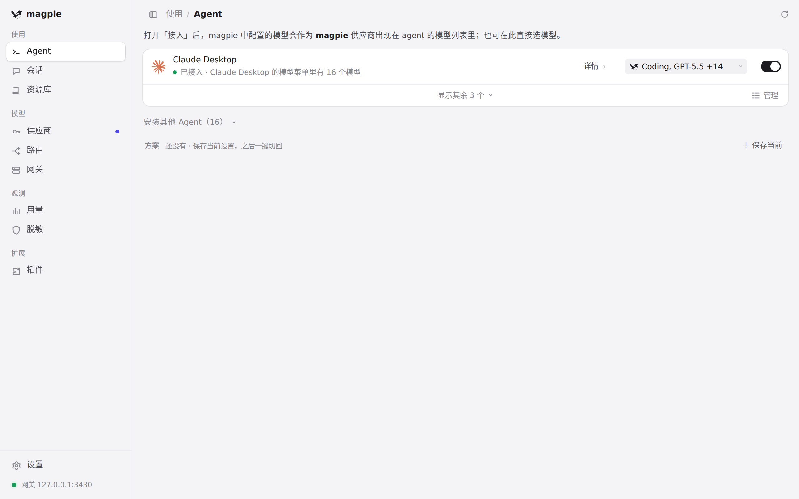
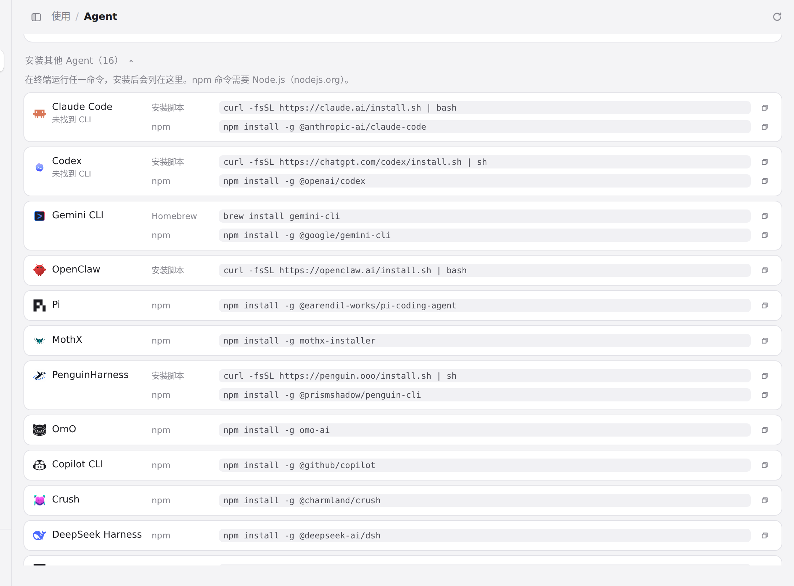
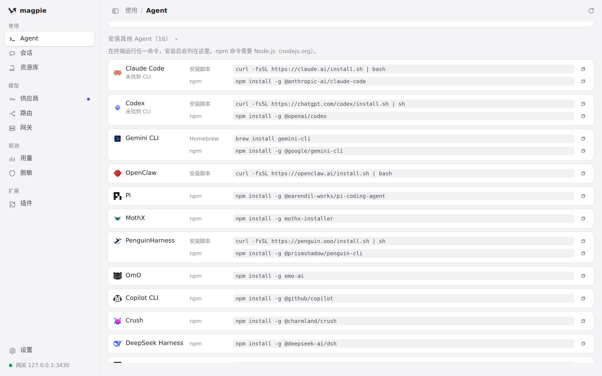

#1088 界面预览
commit 0e9194e · 回到 PR · 这个 PR 把 OpenClaw 作为一种可接入的 agent 加入 Agents 页：未安装时在「安装其他 Agent」里给出官方安装脚本，已接入时在 Agent 行展开的面板里新增「配置模型」，可编辑主模型与有序降级模型并即时保存，同时带来官方彩色图标以及中、英、繁中、日、德文案。
红线是鼠标走过的轨迹，红色圆环是一次点击；底部文字是这一步在做什么。空格暂停，← → 逐段查看。

OpenClaw 的安装入口 · Agent 页：已接入的 Agent 与「安装其他 Agent」入口

OpenClaw 的安装入口 · 展开后的安装条目

OpenClaw 的安装入口 · 滚动后可看到的、位于「安装其他 Agent」列表中的这些条目